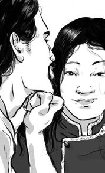
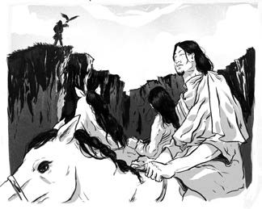
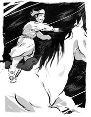

Ha Nguyệt Luân, mẹ của Thiết Mộc Chân, đến từ vùng thảo nguyên phương đông. Bà được gả cho một người Miệt Nhi Khất có tên Chiledu - người đã trải qua một quãng đường dài để đến hỏi cưới bà.

.Trên đường trở về bộ tộc của Chiledu, có một người âm thầm theo dõi họ. Chuyện là Dã Tốc Cai đang cùng chú chim ưng của mình đi săn bỗng phát hiện ra đôi vợ chồng từ trên vách núi. Ông bị vẻ đẹp của Ha Nguyệt Luân mê hoặc. Tuy đã có vợ, nhưng lúc này ông vẫn muốn cưới thêm Ha Nguyệt Luân. Ông phi ngựa về trại, trở ra với anh em của mình và bám theo cặp vợ chồng mới cưới.
Ha Nguyệt Luân biết khó lòng trốn chạy. Cô giục Chiledu chạy trốn. Bởi nếu bắt được chàng, họ sẽ xuống tay sát hại. Chiledu kịp trốn chạy, còn Dã Tốc Cai đưa Ha Nguyệt Luân trở về bộ lạc.
Đó là cuộc sống trên thảo nguyên trải hàng thế kỷ: tàn bạo, kịch tính và không khoan nhượng.

Cuộc sống mới của Ha Nguyệt Luân với Dã Tốc Cai hoàn toàn khác so với thuở nhỏ của cô. Cô lớn lên nhờ sữa, thịt bò, dê cừu và ngựa. Trái lại, bộ lạc của Dã Tốc Cai sống ở nơi giáp ranh của đồng cỏ và rừng núi. Họ ít chăn nuôi, đa số sống dựa vào săn bắn sóc, chim, cá trong rừng hay bất kể thứ gì họ gặp. Mùa xuân năm 1162, một năm sau khi bị bắt cóc, Ha Nguyệt Luân đã sinh một cậu con trai.
Thiết Mộc Chân, chính là Thành Cát Tư Hãn sau này, sinh ra trên đỉnh ngọn đồi trông xuống dòng sông Onon, gần đường biên giới Mông Cổ và Siberia ngày nay.
Dã Tốc Cai lúc đó vừa trở lại sau trận chiến với bộ tộc Thát Đát phía đông. Ông đặt tên con trai theo tên một chiến binh mà ông vừa đánh bại: Thiết Mộc Chân.
Thiết Mộc Chân lớn lên bên dòng sông Onon cùng các em. Cậu còn có hai người anh cùng cha khác mẹ là Biệt Khắc Thiếp Nhi và Biệt Lặc Cổ Đài.
Như những đứa trẻ khác trên thảo nguyên, Thiết Mộc Nhân học săn bắn và cưỡi ngựa. Lên bốn tuổi, cậu đã có thể tự cưỡi ngựa và chẳng mấy chốc đã đứng được trên lưng ngựa!
Khi đôi chân vừa đủ lớn chạm tới bàn đạp, cậu đã có thể vừa cưỡi ngựa vừa bắn cung, ném thòng lọng.
Khi Thiết Mộc Chân chừng tám, chín tuổi, cha cậu quyết định tìm vợ cho con. Họ cùng nhau chu du về phương đông. Dã Tốc Cai đã gặp cha con Bột Nhi Thiếp. Cô bé lớn hơn Thiết Mộc Chân một tuổi. Hai người cha đã quyết định gả con cho nhau. Thiết Mộc Chân ở lại và làm việc cho cha Bột Nhi Thiếp đến lúc hai người lấy nhau.
Trên đường quay trở về nhà, Dã Tốc Cai nhìn thấy một nhóm người Thát Đát đang tiệc tùng. Đang đói và mệt, ông dừng chân tham dự vào buổi tiệc. Đã tám năm kể từ khi Dã Tốc Cai giết người chiến binh của Thát Đát tên là Thiết Mộc Chân. Ông nhận ra thức ăn của mình bị tẩm độc. Sau khi rời khỏi buổi tiệc, ông đổ bệnh.
Dã Tốc Cai đã gửi lời nhắn cho con trai rằng mình sắp chết. Thiết Mộc Chân cần phải quay về nhà.
Khi Thiết Mộc Chân về đến nơi, cha cậu đã qua đời.
Đối với bộ lạc, hai người vợ của Dã Tốc Cai đã không còn quan trọng. Họ lại là người của bộ lạc khác, là người ngoài. Những đứa con thì còn quá nhỏ, không giúp ích được gì. Khi họ dỡ trại cho cuộc di cư mùa hè, tộc trưởng ra lệnh cho mọi người bỏ lại gia đình Dã Tốc Cai.

Một người đàn ông đứng tuổi phản đối. Tù trưởng đáp lại bằng một ngọn giáo đâm xuyên lồng ngực ông. Thiết Mộc Chân lao về phía ông ngay khi mọi người vừa rời đi. Khi ông trút hơi thở cuối cùng, Thiết Mộc Chân bật khóc nức nở. Giờ đây, điều gì sẽ xảy đến với gia đình cậu?
NHỮNG VÙNG ĐẤT CAO, BẰNG PHẲNG VÀ TRƠ TRỤI Ở MÔNG CỔ ĐƯỢC GỌI LÀ THẢO NGUYÊN. NHỮNG ĐỒNG CỎ RỘNG LỚN NÀY CÓ DIỆN TÍCH LỚN GẤP NHIỀU LẦN DIỆN TÍCH PHẦN ĐẤT LIỀN CỦA VIỆT NAM. PHÍA BẮC VÀ PHÍA ĐÔNG NƠI NÀY TIẾP GIÁP VỚI NHỮNG CÁNH RỪNG SIBERIA VÀ MÃN CHÂU. NHÌN VỀ PHÍA TÂY LÀ DÃY NÚI TUYẾT ALTAI, BIÊN GIỚI PHÍA NAM LÀ SA MẠC GOBI.
THỜI TIẾT NƠI ĐÂY VÔ CÙNG KHẮC NGHIỆT. NHIỆT ĐỘ CÓ THỂ LÊN TỚI 40 ĐỘ VÀO MÙA HÈ, VÀ XUỐNG DƯỚI ÂM 50 ĐỘ VÀO MÙA ĐÔNG. MƯA RẤT ÍT VÀ KHÔNG THEO MÙA DẪN ĐẾN VIỆC TRỒNG TRỌT GẦN NHƯ LÀ KHÔNG THỂ. NHƯNG NHỜ CÓ TUYẾT TAN CÙNG NHIỀU SÔNG HỒ, NƠI ĐÂY TRỞ THÀNH KHU VỰC CHĂN NUÔI LÝ TƯỞNG.